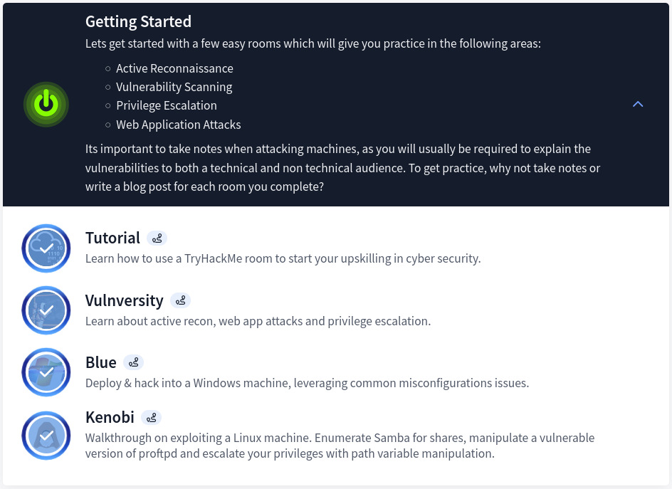
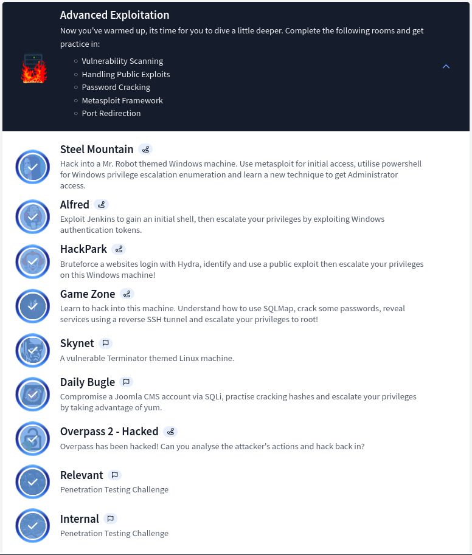
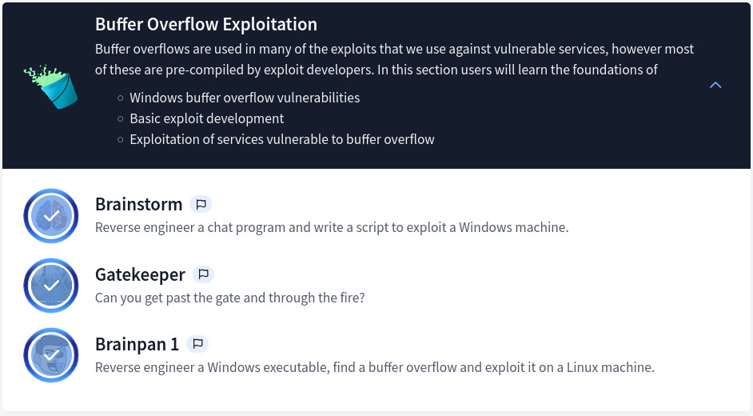
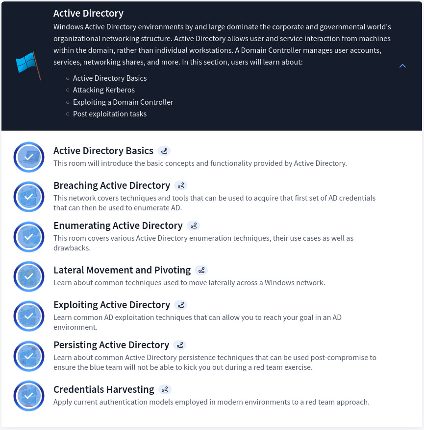
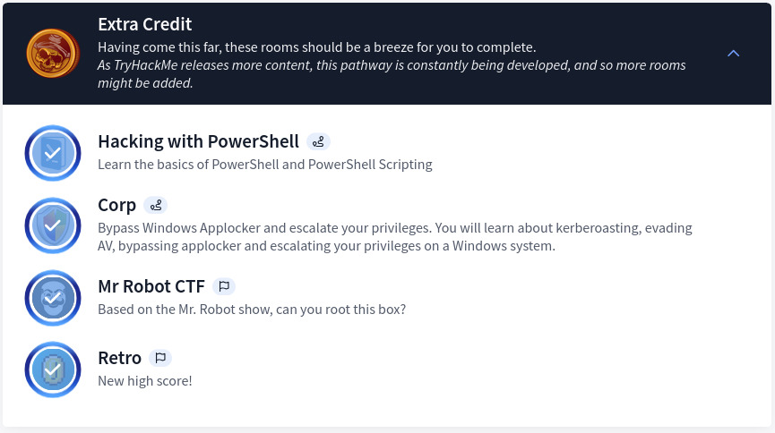

TryHackMe Offensive PenTesting Pathway — Full Review
Table of Contents
Overview
In my journey of sharing my experience about some TryHackMe learning paths, here is another blog covering the Offensive Pentesting Path. This path main deliverable is to equip individual with essential penetration testing skills, focusing on practical lab/machines in mainly web applications and networks security among others. Additionally, the path also highlights the industry-standard tools and methodologies to find vulnerabilities, preparing learners for real-world testing and certifications.
I will be providing details on each section, share some deliverables as well as tips and tricks.
Section 1: Getting Started
Designed with ease and simplicity, this section gives a step-by-step walkthrough on how to connect to VPN, perform basic enumerations, exploitation as well as privilege escalation. The section contains the following:
Section 2: Advanced Exploitation
Fun, challenging and rewarding, this section is blended with multiple challenges (CTF based format) where many tools, techniques as well methodologies can be utilized to pwn each machine. The challenges in the section are as such:
Section 3: Buffer Overflow Exploitation
New to buffer overflow vulnerabilities and exploitation, I learned a lot in the process. The course is covered more in depth on HackTheBox WinBOF and LinBOF. Below is the content of this section:
Section 4: Active Directory
This section covers all the basics from enumeration, exploitation, pivoting, tunneling as well as credentials harvesting. It might seems a lot at first, however there is more to learn on AD. HTB AD Learning Path covers every aspect of it.
Section 5: Extra Credit
Well I wouldn’t comment much on this section as it might be challenging for some or less for others. Nevertheless, it’s definitely worth your time as you might come across something new.

Key Deliverables

It is necessary to note that this path is ideal for individuals aspiring to become professional pentesters or looking to advance their offensive security skills. Some of the deliverables are as below:
- Familiarity and mastering Penetration Testing Methodologies
This path teaches how to apply a structured approach to vulnerability assessments, including reconnaissance (passive and active), exploitation, and post-exploitation tactics. - Hands-On skill development and practical experience
This path helps to gain proficiency with penetration tools such as Metasploit, Burp Suite, Nmap, Hydra, BloodHound, etc and custom scripts for real-world scenarios. In addition, the path is tailored with realistic labs and challenges that simulate modern security threats and vulnerabilities. This therefore enhances critical thinking and “out-of-the-box” problem-solving abilities. - Certification Preparation
Upon completion of this path, you will gain solid foundation for pursuing industry recognized certifications such as eJPT, eCPPT, CPTS, OSCP or CEH to list some among others.
Final Tips and Tricks
There are plenty of lessons learned as well as valuable insights from this path. Below are the main takeaways of each section:
- Master The Basics Ensure that you have a good understanding of the fundamental courses. This includes familiarity with IP Addressing, protocols (TCP/UDP), common services and vulnerability vectors, fundamentals of Windows and Linux, CMD and Linux commands etc. Hence, this will significantly ease the learning curve.
- Leverage Resources fully Many people tends to skip lab exercises which is a mistake. Those labs/challenges are designed to put into practice whatever have been learned. As a result, you may keep notes or create a knowledge repository of your choice.
- Follow a Methodology Adopt a structured approach to penetration testing. You may learn about methodologies and standards, such as MITRE ATT&CK, OWASP, PTES, PCI DSS, NIST 800-115, OSSTMM and many more. Select one and use its testing guide to ensure thoroughness in reconnaissance, exploitation, and post-exploitation.
- Practice, Practice, Practice (If you don’t fail, you’re not even trying — Denzel Whashington) As we often say “practice makes perfect”, it is a must to apply the skills learned by solving vulnerable machines on THM, HTB or exploring real-world platforms like VulnHub or Proving Grounds. Make sure to try everything you know before looking up for answers in forums or write-ups. When you do check them, kindly make sure to understand the approach/methodology as well as the tool utilized.
Note: Notion, Obsidian, Github and many more can be utilized. I use Obsidian and Notion by the way.
View My Certificate of Completion HERE